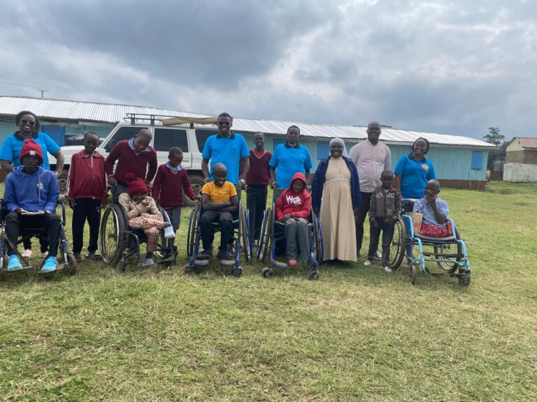
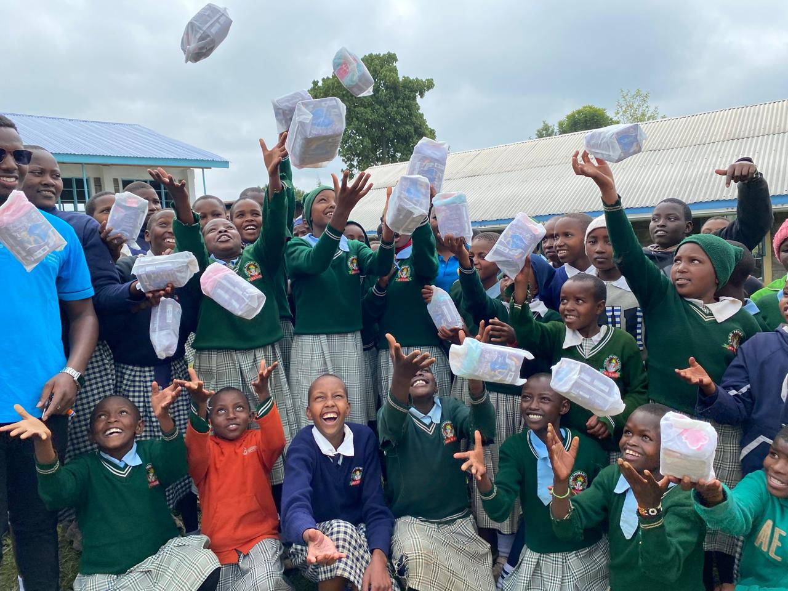
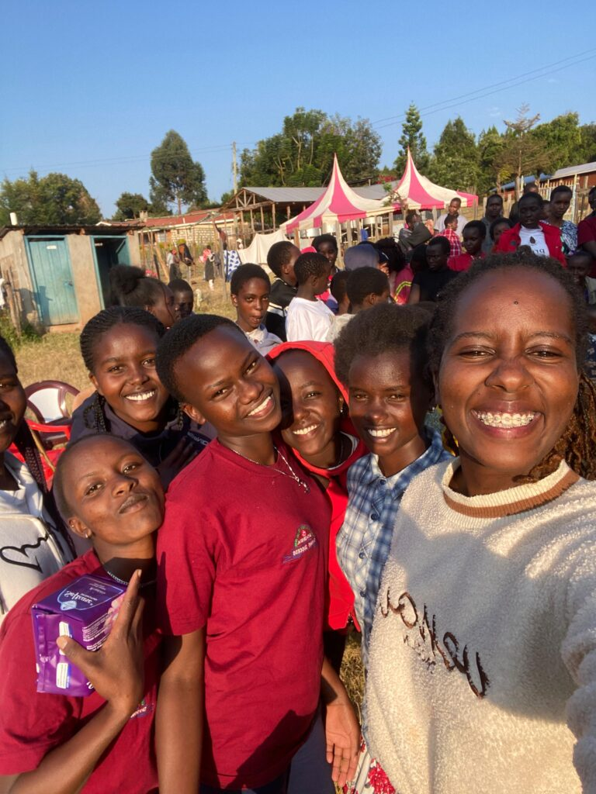
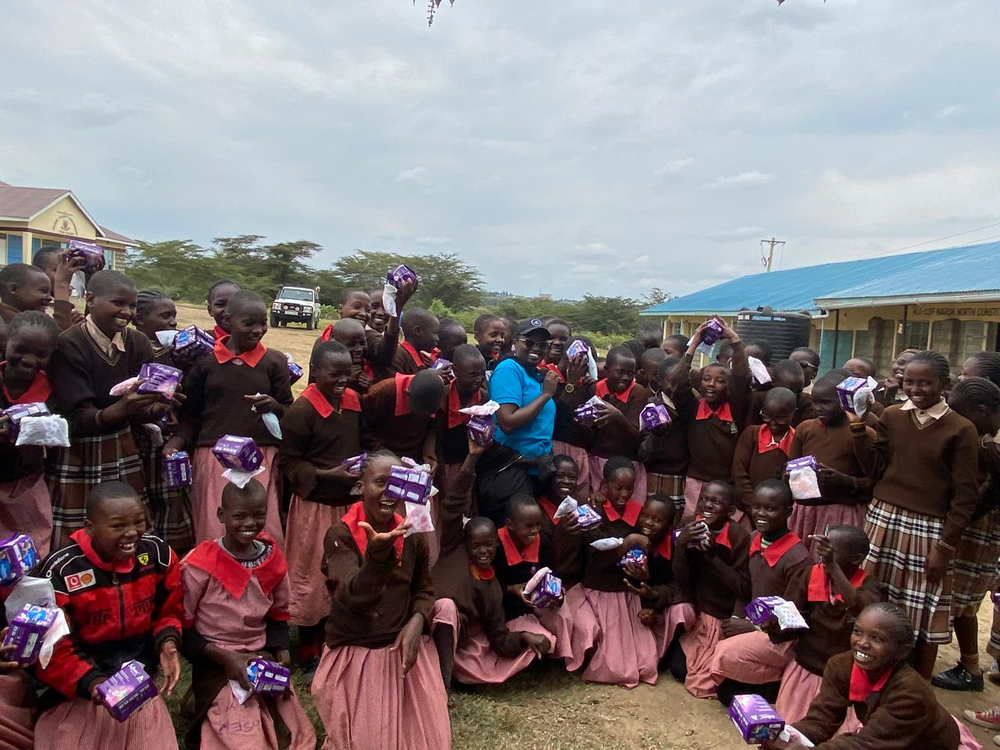
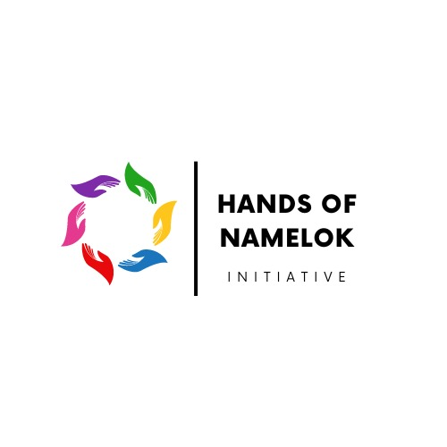

From Risk to Resilience
Franciska narrates how she helped a young girl avoid FGM and early marriage and rewrite her future through education and support.
Read More →Supporting disabled children and rescued girls with medical care, education, and love, since 1991.
Support Us Our Story
YEARS
CHILDREN
GIRLS RESCUED
Namelok Naretoi is a registered community based organisation founded in Narok, Kenya. We support children living with disabilities through medical rehabilitation and scholarships, rescue girls from FGM and early marriage, and provide shelter, counseling, and education to those who need it most.
Learn MoreReal lives changed. Real stories from Narok.

Franciska narrates how she helped a young girl avoid FGM and early marriage and rewrite her future through education and support.
Read More →
Susan was rejected by her community because of her disability. Namelok gave her a home, medical care, and a school that saw her potential.
Read More →Rescued from early marriage at 13, Vivian is now in secondary school and dreams of becoming a nurse.
Read More →
Faith's determination lit a way for her and others in her village, showing that one rescued girl can inspire a whole community.
Read More →Survivor of abuse, Shiku has become a leader at the rescue center, mentoring younger girls and advocating for their rights.
Read More →
Despite disability and community stigma, Teresia now thrives in school and has discovered a gift for art.
Read More →The values and vision behind every decision we make.
Fostering a community where disabled children and rescued girls are given the opportunity to thrive and contribute, breaking barriers and promoting inclusivity and equality.
Empowering disabled children and marginalized girls by providing comprehensive support for their successful integration and fulfillment into society as valued individuals.
Glimpses of life and work at Namelok Naretoi Home.

